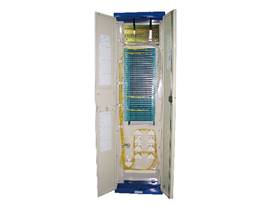

Fiber Optic Distribution Frame GPX910-Yb Series

Features
* Wall-mounting or back-to-back installation, all front operation
* Independent space for cables, pigtails and patch cords, noninterference
* Best management solution for patch cord, reasonable routing and easy to find
* Ensure the bending radius of fiber and cable is more than 40mm in any position
* Electrolytic plate structure
* Easier cable installation
* large-scale merging is available
* Modular structure, flexible operation for either splice or distribution unit
* Suitable for fiber optic ribbon cable as well
* 30 degree angle port ensures the bending radius of patch cord and protects eyes from laser
* Equipped with grounding device
ORdering Guide
NO. |
Type |
Dimension (mm) H*W*D |
Max Capacity (Fiber count) |
1 |
GPX910-Y1b |
2600x600x300 |
504 |
2 |
GPX910-Y2b |
2200x600x300 |
360 |
3 |
GPX910-Y3b |
2000x600x300 |
288 |